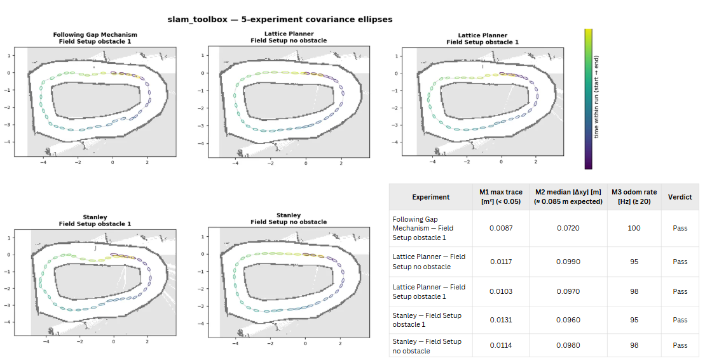
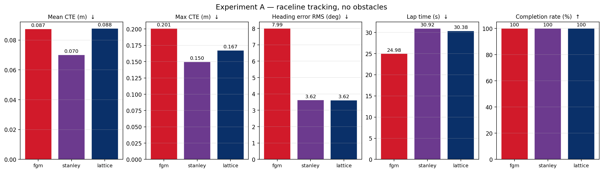
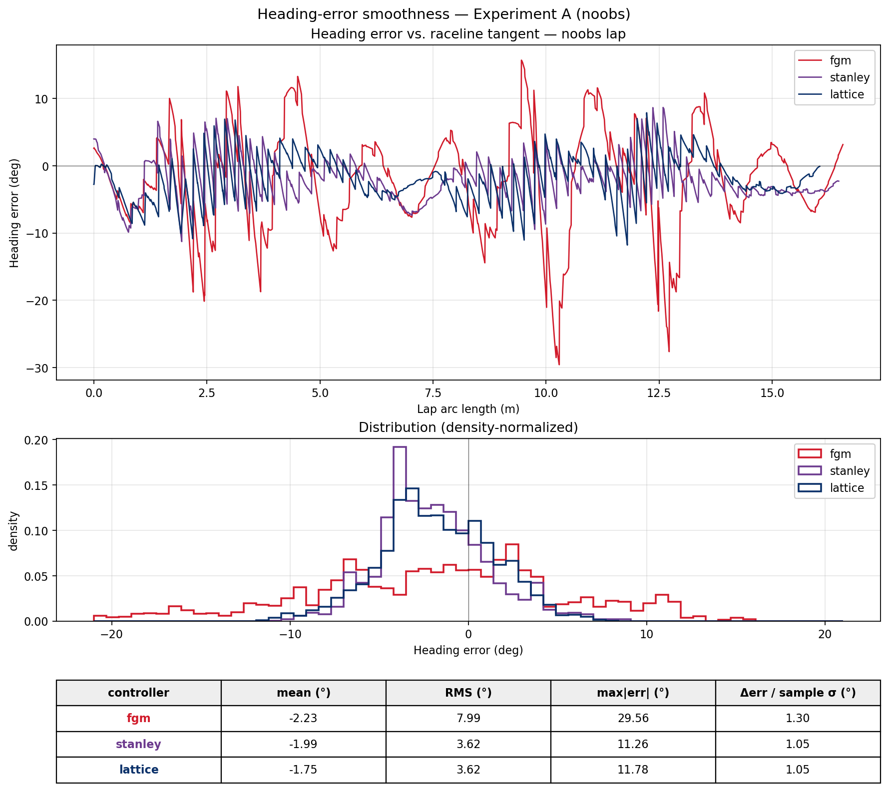
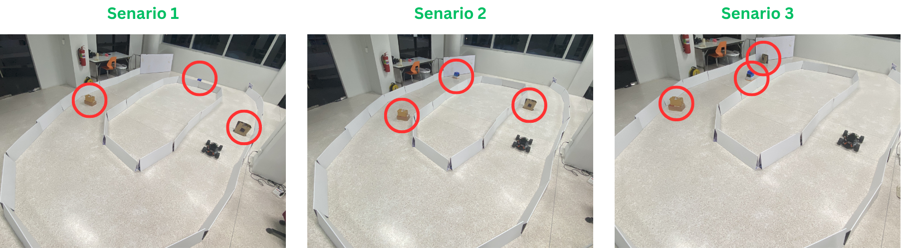
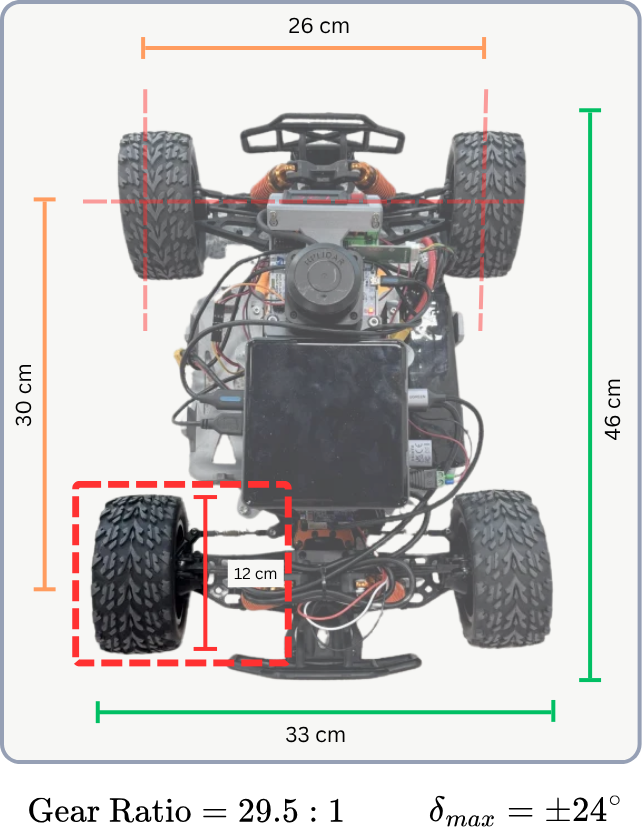
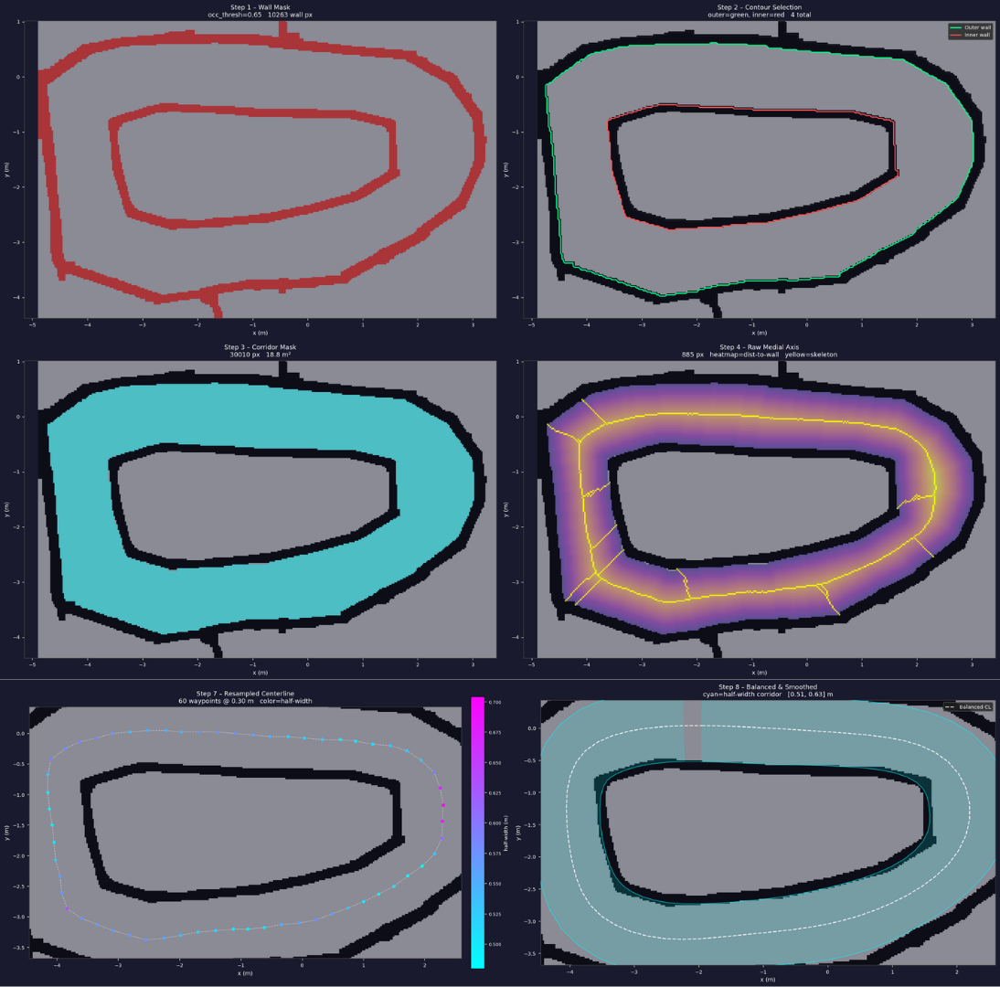

Overview
A comparison of obstacle-avoidance strategies on a real 1:10 autonomous race car, built and tested by a team of five.
- Map-based planners exploit a known track but depend on good localization.
- Reactive methods need no map but only see what is directly ahead.
The project measures that trade-off on the same car.
- Every controller runs its own best tuning and starts from the same pose.
- The track is 120 to 160 cm wide.
- Obstacles up to \(26 \times 18 \times 30\) cm are placed in three scenarios that are not in the saved map.
My part was the Stanley Avoidance controller and the assembly of the car.
Hardware
| Vehicle | 1:10 scale RC car with Ackermann steering, F1TENTH standard, gear ratio 29.5:1, maximum steering angle \(\pm 24^\circ\) |
|---|---|
| Drive | 3665 G3 2400 KV brushless motor on a VESC |
| Steering | Servo driven by an STM32G474RE running micro-ROS |
| LiDAR | RPLIDAR C1, 2D, \(360^\circ\), 12 m range |
| IMU | BNO055 USB stick, 9-axis absolute orientation |
| Power | Two 4S LiPo Batteries |
System
| Computer | Intel NUC 11 PAH, Core i7 |
|---|---|
| Localization Rate | 95 to 100 Hz scan-match pose updates |
| Localization | SLAM Toolbox in localization mode on a frozen map, with an EKF fusing wheel odometry and IMU |
| Software | ROS 2 Humble, robot_localization, RViz2, Python |
Process
Build the car
The 1:10 car is assembled with a VESC-driven brushless motor, a steering servo under micro-ROS on an STM32, a 2D LiDAR and an IMU.
Localize on a frozen map
An EKF fuses wheel odometry and the IMU, and SLAM Toolbox in localization mode corrects the pose against a saved map. Every map-based method gets the same pose estimate.
Generate the raceline
A raceline is computed offline from the saved map.
- A speed profile slows the car in corners from a lateral acceleration limit.
- A forward pass and a backward pass keep the speeds reachable by accelerating and braking.
Implement the controllers
Four controllers run on the same car.
- Stanley Avoidance rasterizes the LiDAR scan into an occupancy grid and checks the path for collisions. It finds which side the obstacle is on and ramps a lateral offset into the Stanley cross-track term.
- The lattice planner scores nine shifted candidate paths and tracks the best one with Pure Pursuit.
- Follow the Gap needs no map and steers toward the largest gap in the scan.
- Pure Pursuit and Stanley run as clean-track baselines.
Race and measure
Each controller runs the clean track and three obstacle scenarios. The logs give lap time, cross-track error, heading error, clearance, detour length, and recovery distance.
Results
Localization
Localization stayed within the 0.05 m² covariance target in every trial.
Table 1. SLAM Toolbox localization across five runs
| Run | Max Covariance Trace (\(\mathrm{m^2}\)) | Median Pose Step (m) | Pose Rate (Hz) |
|---|---|---|---|
| Follow the Gap, Obstacle 1 | 0.0087 | 0.072 | 100 |
| Lattice, No Obstacle | 0.0117 | 0.099 | 95 |
| Lattice, Obstacle 1 | 0.0103 | 0.097 | 98 |
| Stanley, Obstacle 1 | 0.0131 | 0.096 | 95 |
| Stanley, No Obstacle | 0.0114 | 0.098 | 98 |

Clean track
Stanley had the lowest mean cross-track error, 0.070 m. Follow the Gap had the shortest lap, 24.98 s, and a heading error RMS of 7.99° against 3.62° for Stanley.
Table 2. Clean track, best value in bold
| Controller | Mean Cross-Track Error (m) | Max Cross-Track Error (m) | Heading Error RMS (°) | Lap Time (s) | Completion |
|---|---|---|---|---|---|
| Follow the Gap | 0.087 | 0.201 | 7.99 | 24.98 | 100% |
| Stanley | 0.070 | 0.150 | 3.62 | 30.92 | 100% |
| Lattice | 0.088 | 0.167 | 3.62 | 30.38 | 100% |


Obstacle scenarios
With obstacles that are not in the map, Follow the Gap had the fastest lap and the lowest cross-track error RMS in all three scenarios. Stanley Avoidance gave the shortest detour in all three.
Table 3. Tracking error and recovery distance in obstacle scenarios 1 to 3, best value in bold
| Controller | Tracking Error RMS (m) | Recovery Distance (m) | ||||
|---|---|---|---|---|---|---|
| 1 | 2 | 3 | 1 | 2 | 3 | |
| Follow the Gap | 0.119 | 0.121 | 0.110 | 1.02 | 0.50 | 0.69 |
| Stanley | 0.186 | 0.171 | 0.155 | 1.09 | 1.45 | 1.51 |
| Lattice | 0.164 | 0.181 | 0.129 | 1.65 | 1.73 | 0.94 |

Figures and Video


